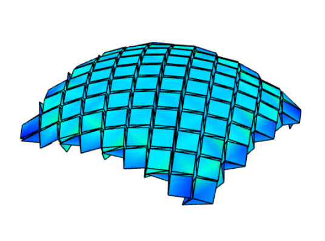
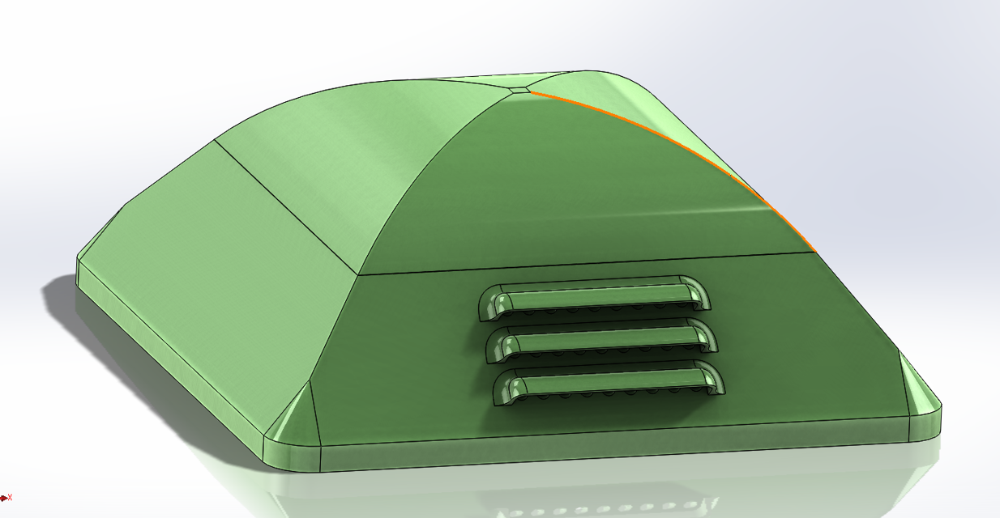

My Journey
Math & Physics Focus
BSc Mechanical Engineering
Autonomation Intern
MSc Computer Science
Robotics & Smart Systems
Strengths & Passions
- Driven by a curiosity to solve complex challenges in smart, adaptive systems.
- Passionate about the intersection of origami structures, simulations, and robotics.
- Hands-on experience with 3D modeling, Arduino programming, and product development.
Core Beliefs
- Pushing the boundaries of innovation in automobile, aerospace, and additive manufacturing.
- Fostering knowledge through teaching and supervising practical lab sessions.
- Combining academic knowledge with real-world engineering challenges.
Featured Projects

Origami-Inspired Airbag Design
Analyzed folding patterns for crash absorption to advance vehicle safety technology.

CAN Bus Data Visualization
Developed a tool to interpret and visualize real-time automotive CAN bus data.

IoT Sensor Bubble
An ongoing project to monitor environmental conditions for food transport.